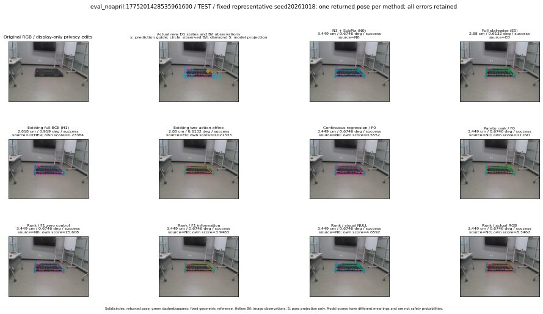

실선은 반환 자세, 초록 점선은 고정 기하 참조입니다. S는 영상 관측이 아닙니다. 점수는 모델별 의미가 다르며 보정된 안전 확률이 아닙니다. 개인정보 처리는 표시 사본에만 적용했습니다.
| 방법·seed | 위치 / 회전 / 공동성공 | 실제 출처 | 선택 후보 | 각 모델 자체 점수 |
|---|---|---|---|---|
| N0 | 3.449 cm / 0.6746 deg / success | N0 | N/A | N/A |
| E0 | 2.88 cm / 0.6132 deg / success | E0 | N/A | N/A |
| E0_REGENERATED | 2.88 cm / 0.6132 deg / success | E0 | E0_REGENERATED | N/A |
| POSEFIX_SUBPIX_PF_ANCHOR | 2.964 cm / 0.7206 deg / success | OTHER | N/A | N/A |
| POSEFIX_SUBPIX_YOLO_ANCHOR | 2.964 cm / 0.7206 deg / success | OTHER | N/A | N/A |
| D1_H1_MLP_s20261018 | 2.818 cm / 0.919 deg / success | OTHER | WD0/ORIGINAL_WD/selected | 0.23384356498718262 |
| D1_H1_MLP_s20261019 | 2.908 cm / 0.7877 deg / success | OTHER | G10/ORIGINAL_WD/selected | 0.2034827023744583 |
| D1_H1_MLP_s20261020 | 3.449 cm / 0.6746 deg / success | N0 | N0 | -0.237062007188797 |
| D1_H1_PAIR_MLP_s20261018 | 3.449 cm / 0.6746 deg / success | N0 | N0 | -0.5532194972038269 |
| D1_H1_PAIR_MLP_s20261019 | 3.449 cm / 0.6746 deg / success | N0 | N0 | -0.21594122052192688 |
| D1_H1_PAIR_MLP_s20261020 | 3.449 cm / 0.6746 deg / success | N0 | N0 | 0.3126845359802246 |
| D1_H1_PAIR_ROLE_AFFINE_s20261018 | 2.88 cm / 0.6132 deg / success | E0 | E0_REGENERATED | 0.021333005279302597 |
| D1_H1_PAIR_ROLE_AFFINE_s20261019 | 2.88 cm / 0.6132 deg / success | E0 | E0_REGENERATED | 0.005970500409603119 |
| D1_H1_PAIR_ROLE_AFFINE_s20261020 | 2.88 cm / 0.6132 deg / success | E0 | E0_REGENERATED | 0.06002204865217209 |
| R_CONT_F0_s20261018 | 3.449 cm / 0.6746 deg / success | N0 | N0 | 0.5552048087120056 |
| R_CONT_F0_s20261019 | 3.449 cm / 0.6746 deg / success | N0 | N0 | 0.5727183222770691 |
| R_CONT_F0_s20261020 | 3.449 cm / 0.6746 deg / success | N0 | N0 | 0.5872964262962341 |
| R_ORDER_F0_s20261018 | 3.449 cm / 0.6746 deg / success | N0 | N0 | 17.097116470336914 |
| R_ORDER_F0_s20261019 | 3.449 cm / 0.6746 deg / success | N0 | N0 | 9.56161880493164 |
| R_ORDER_F0_s20261020 | 3.449 cm / 0.6746 deg / success | N0 | N0 | -7.939034938812256 |
| R_ORDER_F1_ZERO_s20261018 | 3.449 cm / 0.6746 deg / success | N0 | N0 | 25.60789680480957 |
| R_ORDER_F1_ZERO_s20261019 | 2.908 cm / 0.7877 deg / success | OTHER | G10/ORIGINAL_WD/selected | 22.402301788330078 |
| R_ORDER_F1_ZERO_s20261020 | 3.449 cm / 0.6746 deg / success | N0 | N0 | 13.098353385925293 |
| R_ORDER_F1_s20261018 | 3.449 cm / 0.6746 deg / success | N0 | N0 | 3.948272705078125 |
| R_ORDER_F1_s20261019 | 3.449 cm / 0.6746 deg / success | N0 | N0 | 8.050012588500977 |
| R_ORDER_F1_s20261020 | 3.449 cm / 0.6746 deg / success | N0 | N0 | 2.963536024093628 |
| V_ORDER_NULL_s20261018 | 3.449 cm / 0.6746 deg / success | N0 | N0 | 4.659245491027832 |
| V_ORDER_NULL_s20261019 | 3.449 cm / 0.6746 deg / success | N0 | N0 | 3.7895865440368652 |
| V_ORDER_NULL_s20261020 | 3.449 cm / 0.6746 deg / success | N0 | N0 | 7.412847995758057 |
| V_ORDER_RGB_s20261018 | 3.449 cm / 0.6746 deg / success | N0 | N0 | 8.346699714660645 |
| V_ORDER_RGB_s20261019 | 3.449 cm / 0.6746 deg / success | N0 | N0 | 3.9957616329193115 |
| V_ORDER_RGB_s20261020 | 3.449 cm / 0.6746 deg / success | N0 | N0 | -2.459821939468384 |